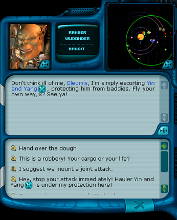
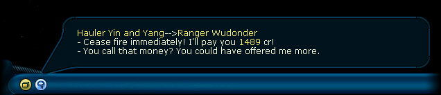

Ranger manual > Space
screen > Talk (T)
|
Ranger manual > Space
screen > Talk (T)
|
| Talk (T) You can enter into a conversation with the caption of another ship. His answers depend on the current conversation. If it is his trade ship, he will inform you about his plans: where he is heading to, where he is coming from and what is the level of prices there. If it's a pirate or a ranger, depending on his relation to the player he can give a useful piece of advice offer you to mind your own business and hit the road. |

Use dialogues to make a military alliance or ask someone to cease the attack.
You can trade with another ship or you can intimidate someone
and take him money or a part of the cargo. You can hire rangers
with a preliminary discussion of the terms.
To enter a talk with another ship: 2. Click a spaceship you wish to talk to. To quite a dialogue with another ship: • Choose 'End of talk' or press "Close window". The communication is possible only with the ships located in the range of the radar operation. So, if the radar is broken or isn't mounted, talking to other ships is impossible. Note. In the talk mode you can move the space map either on the radar, or directly in the space, holding down the right mouse button. In addition, ships and planets, which are currently the subject of discussion, have in the dialogue window the "Center camera" button; . The ships can themselves start communicating with the player or each other. The icons of intercepted messages are located at the bottom of the navigation panel and can be reviewed by the player. |

| |
 If
you succeeded in hiring a ranger below the
If
you succeeded in hiring a ranger below the